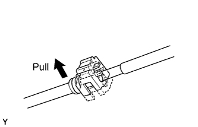
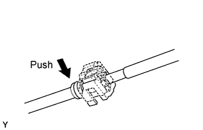

FUEL SYSTEM > PRECAUTION |
| 1.FUEL SYSTEM |
Observe these precautions when disconnecting the fuel tube connector (for quick type A).
 |
Detach the lock claw by lifting up the cover, as shown in the illustration.
Check for dirt or mud on the pipe and around the connector before disconnection. Clean if necessary.
 |
Pinch the connector and disconnect the connector and pipe.
If the connector and the pipe are stuck together, pinch the connector, then push and pull the pipe to disconnect the pipe and pull it out.
Check for dirt or mud on the seal surface of the disconnected pipe. Clean if necessary.
 |
To protect the disconnected pipe and connector from damage and contamination, cover it with a plastic bag.
Observe these precautions when disconnecting the fuel tube connector (for quick type B).
 |
Check that there is no damage or foreign matter on the part of the pipe that contacts the connector.
 |
Detach the 2 claws of the connector retainer. Push down on the connector and disconnect it from the pipe.
Check for foreign matter on the seal surface of the disconnected pipe. Clean it if necessary.
 |
To protect the disconnected pipe and connector from damage and foreign matter, cover it with a plastic bag.
Observe these precautions when connecting the fuel tube connector (for quick type B).
 |
Check for foreign matter on the pipe and around the connector before connecting it. Clean it if necessary.
Align the axis of the connector with the axis of the pipe. Push the pipe into the connector, and push up on the retainer.
 |
After connecting the pipe and connector, try to pull them apart to confirm that they are securely connected.
 |
Observe these precautions when connecting the fuel tube connector (for quick type A).
Check that there is no damage or contamination in the connected part of the pipe.
Align the axis of the connector with the axis of the pipe. Push the pipe into the connector until the connector makes a "click" sound. If the connection is tight, apply a small amount of fresh spindle oil or gasoline on the tip of the pipe.
 |
After having finished the connection, try to pull apart the pipe and the connector to confirm that they are securely connected.
 |
Attach the lock claw to the connector by pushing down on the cover, as shown in the illustration.
Check that there is no fuel leakage.
| 2.CHECK FOR FUEL LEAK |
Check that there are no fuel leaks after performing maintenance anywhere on the fuel system (Click here).